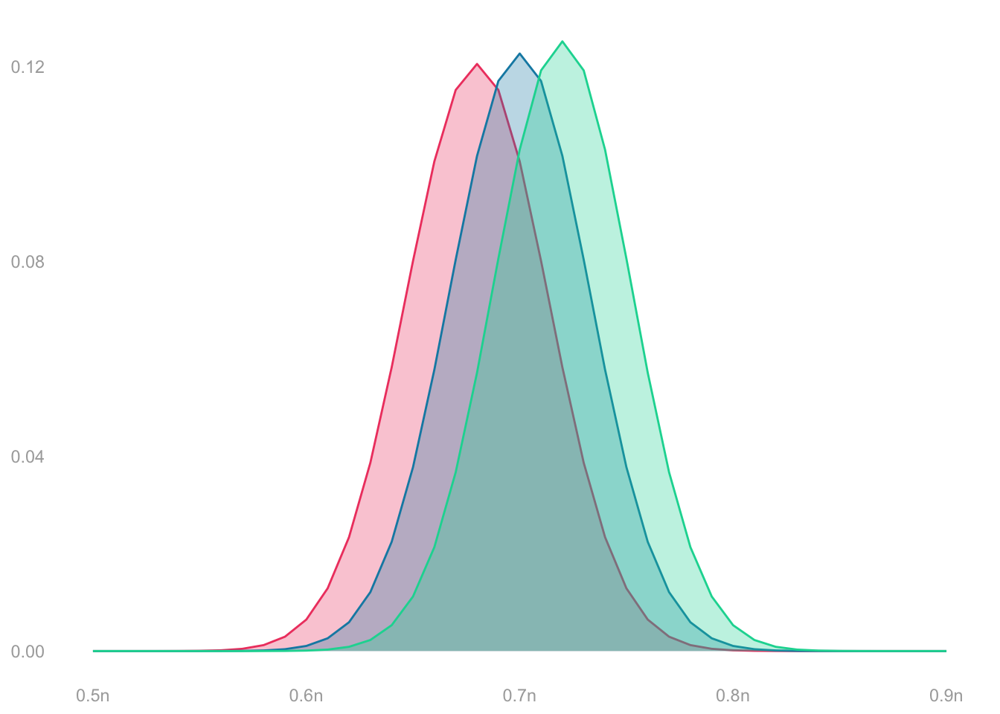
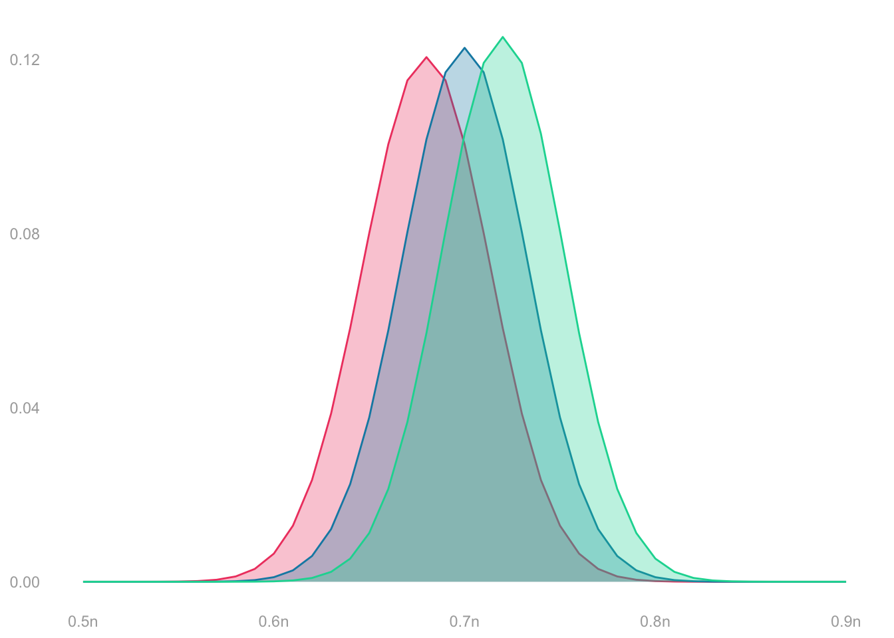

\[ \begin{aligned} &P\qty(\sum_{i=1}^n Y_i = s) = \binom{n}{s} \frac{m_0!}{(m_0-n+s)!} \frac{m_1!}{(m_1-s)!} \frac{(m-n)!}{m!} \\ &\qfor n = 100, \ m = 200 \\ &\qand \theta_1 \in \{\textcolor[RGB]{239,71,111}{0.68}, \textcolor[RGB]{17,138,178}{0.7}, \textcolor[RGB]{6,214,160}{0.72} \} \end{aligned} \]
These functions have ‘hyper’ in their name because we call this distribution the Hypergeometric distribution. The Hypergeometric distribution describes the number of successes when we draw \(n\) items without replacement from a population containing \(m_1\) successes and \(m_0\) failures.
We’ve shown that’s the sampling distribution of the sum of responses, \(Y_1 + \ldots + Y_n\), when we sample without replacement from a population of binary responses \(y_1 \ldots y_m\) in which \(m_1\) are ones.
It’s a bit harder to estimate than the Binomial because it depends on two things we don’t know: the population size \(m\) and the number of ones \(m_1\). We usually know \(m\), though. And if we do, we can estimate \(m_1\) by \(m\hat\theta\) where \(\hat\theta\) is our sample proportion. That’s usually good enough.
The Hypergeometric looks a lot like the Binomial when \(n\) is small relative to \(m\). That’s because sampling without replacement is almost like sampling with replacement when you’re unlikely to pick the same person twice anyway. When \(n\) is a meaningful fraction of \(m\), the Hypergeometric is narrower—you get better precision by not wasting calls on people you’ve already talked to.